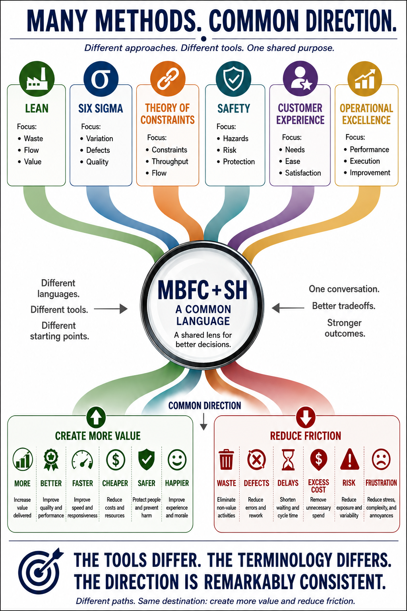

01 · FRAMEWORK
Define Improvement
What outcomes are we actually trying to improve?
A connected four-book system for improving decisions, judgment, organizations, and leadership capability.
Four books examine four connected questions—from defining improvement to building an organization capable of continuing it.
What outcomes are we actually trying to improve?
How should we decide before the outcome is known?
What organizational conditions shape those decisions?
What can the organization eventually do without the leader?
Improvement provides the direction. Judgment improves the decision. Architecture shapes the environment. Leadership builds the capability to continue.

The visible price is rarely the entire consequence. Better decisions consider value, friction, tradeoffs, duration, significance, and effects across the whole system.
This question connects the practical examples throughout MBFC + SH with the deeper progression of the four books.
Different approaches. Different tools. One shared purpose.
MBFC + SH does not replace Lean, Six Sigma, Theory of Constraints, safety, customer experience, or operational excellence. It provides a common language for examining what different approaches are ultimately trying to accomplish.
The tools differ. The terminology differs. The direction is remarkably consistent.

Framework → Judgment → Organizations → Capability

Evaluate decisions through value creation, organizational friction, tradeoffs, and net improvement across the whole organization.

Examine decisions through multiple perspectives, challenge assumptions, and consider alternatives, tradeoffs, risks, and consequences before results tell the story.

Shape the decision environment through Direction, Information, Authority, Incentives, Feedback, and Adaptation so the organization can learn and improve.

Develop empowered people, owned decisions, clear accountability, strong systems, continuous learning, and an adaptive organization.
Download the practical tools, read the opening of each book, and explore the real-world cases used throughout the series.
Read the Preface, Introduction, Part I opening, and Chapter 1 from each book.
Explore Book Previews →Browse the organizations, decisions, and challenges examined throughout the series.
Explore Case Studies →Use the series as a self-guided system, apply the frameworks to real organizational challenges, or start a conversation about deeper engagement.
Read the books, use the free previews, and explore the case studies to understand the connected MBFC + SH system.
Explore Resources →Use the practical toolkits to examine decisions, organizational friction, decision architecture, and leadership capability in your own work.
Use the Toolkits →For consulting, workshops, organizational discussions, bulk book orders, or other ways to bring MBFC + SH into your organization, start a conversation.
Consulting & Inquiries →Each book approaches better organizations from a different direction—improvement, judgment, organizational design, and leadership capability.
“Better questions often lead to better discussions. Better discussions often lead to better decisions.”
Book One · The Improvement Compass
“Better decisions rarely emerge from better answers alone. They emerge from better thinking.”
Book Two · The Decision Lens
“Every organization has a decision architecture. The question is whether it has been designed deliberately—or merely inherited.”
Book Three · Decision Architecture
“The best leaders do not make themselves irrelevant. They make their organizations more capable.”
Book Four · Leadership Leverage
Read the series, put the ideas to work, or start a conversation about applying MBFC + SH.